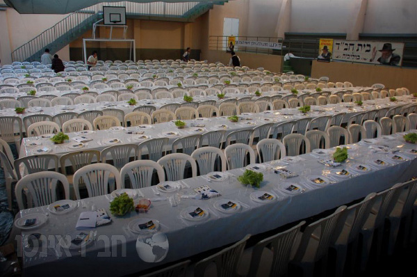

Chabad Seders Around the Globe
Do you feel tense these days before Pesach? Think of the shluchim who are preparing for dozens, hundreds, even thousands of guests. In their places of shlichus kosher food is hardy available and finding a spacious location for everyone can be difficult, not to mention security arrangements and all the other details that need to be taken care of. * A Beis Moshiach reporter took a virtual and telephone trip to Chabad houses around the world. He “visited” Katmandu and Nepal, India and Bolivia, Nicaragua, Mexico, and New Jersey and returned with fascinating stories about young shluchim who produce huge Seders as they witness divine providence guiding them every step of the way.

I became aware of a campaign of the united Chabad houses of India, which invites the backpackers across the huge country to join them for a Seder in one of fourteen Chabad houses in India and neighboring Sri Lanka. Information was posted all across the country, inviting the “fifth son” to come celebrate Pesach with the shluchim of the Rebbe.
It is not only in India and Sri Lanka, Nepal and Thailand – Israeli tourist strongholds, where the shluchim have Pesach guests. Nearly every Chabad house, large and small, the world over, hosts a public Seder so that not a single Jew is excluded. The backdrop, location and the guests are what change from one Seder to the next. There are S’darim for needy people which are free and there are S’darim in shul where the shliach will hold his own Seder after everyone leaves. And there are shluchim who rent a hotel or simcha hall, kasher it for Pesach, and set up for a hundred people in formal dress, suits and ties, who come with an entrance ticket.
S’darim have taken place on mats, eastern style, at a “table” no higher than five centimeters off the floor. In Chabad houses such as these, it is moving to see the Israeli visitors, a few days before Pesach, rolling up their sleeves and helping out. With lively Chassidic music playing, they peel mountains of vegetables and help kasher chickens and clean fish.
At the conclusion of a round of phone calls and electronic communication, I am pleased to present to you a rare glimpse of the hours, days, and sometimes even months of preparation for “Pesach with Chabad.”
Okay, let’s say you got an offer to leave home and you were given a ticket to fly somewhere to help run a communal Seder. You would feel lucky, right? To be excused from the cleaning and Pesach expenses while going on shlichus? That’s the good life …
Wait, that was purely hypothetical. Here is the same offer with a few changes. You will have to clean your house and pay for your own tickets as well as buy everything from A to Z for Pesach and invite guests! Hmm … Aside from that, if you don’t mind, we need you to raise money before you go, and want you to bring the matza, wine and food and then organize, by yourselves, with the money that you raised, aside from your own Seder, another Seder for 250 people. Naturally, you will be leaving your parents behind.
I know the answer; you don’t have to say anything. Assuming that just asking the question got you into the stressful atmosphere of Erev Pesach on shlichus, let us set out …
“IS IT POSSIBLE FROM ROSH CHODESH?!”
What is needed for the Seder? A place? Okay, that’s not a big problem. You can use a table in the living room. Maybe we will have to borrow or buy a folding table and some chairs from the neighbors.
The location of a Chabad house Seder is an issue. There are Chabad houses that target tourists in which the Seder is set up with mats on the floor. No tables are necessary. But there are Chabad houses, of course, where the people sit down at set tables in a spacious and sometimes beautiful hall. If the Chabad house fits the bill, great, and if not, a place has to be rented. There are also situations in which, due to the many guests, the Chabad house plus another hall are needed.
On Pesach of two years ago in Cozumel, Mexico, they celebrated an exodus from Egypt. R’ David Caplin, who runs the Chabad house with R’ Shalom Peleg, said that the preparations began three months earlier. Due to the expansion of their activities, they decided to move to a new, larger building. Three months of work ended only one week before Yom Tov. As they prepared they realized that despite the size of the new Chabad house hall, it was still too small to contain all the people registered for the Seder (not to mention those who come without registering).
What could they do? They got the mayor involved. Yes, the greatest “l’chat’chilla aribber” possible. The mayor got to work and arranged a huge hall where 250 Israeli tourists and locals fit comfortably.
“GREAT, POWERFUL, AND PLENTIFUL”
If I only needed to describe the huge Seder that took place in La Paz, Bolivia, I could fill an article. The challenges that the new, young shluchim, Yosef Yitzchok Kupchik and his wife, had in preparing for 1500 tourists, were enormous. Doubts were in the category of “chametz” and could not even be contemplated. Instead of doubts, there was strong faith in the meshaleiach, the Rebbe MH”M, that everything would work out. He described the logistics, the pressure, and the miracles with charm and humor. How do you get matza, wine, fish, chicken, bachurim to help out, waiters, security guards, and babysitters for the little ones?
When you are preparing for your Seder at home, you vacillate between one brand of wine and another, but to make the wine yourself? You don’t consider that. What do you know about wine making? But when it entails four cups of wine for 1500 people, the cost of the wine and the shipping face off against the argument: What do I know about wine making?
R’ Kupchik who landed with his wife and two children before Purim of two years ago, managed between landing and Purim to arrange sh’chita of hundreds of chickens (two days of work). Right after Purim he started making wine. He ordered three quarters of a ton of green grapes, the cheapest ones, and some purple grapes for the color. He had to take all of it, in addition to dozens of kilograms of sugar, up four floors. Don’t forget, the city is 4000 meters above sea level, so the oxygen is thin, which means that walking up those flights is very hard, especially with all that stuff.
He had two problems. One, getting new kosher pots for Pesach; and two, finding shomer Shabbos workers so the wine would not become yayin nesech. It sounds simple when you are in Eretz Yisroel or Crown Heights, but go find shomrei Shabbos in Bolivia!
Throughout the day, Kupchik looked for shomrei Shabbos workers, but none were to be found. At the end of an exhausting day of shlichus, the work was just beginning. They waited until all the Chabad house employees left and got to work. The plan was that the couple would work together but they had no idea how much work there was.
Another problem that they had to deal with was an isolated place without allowing for the possibility of non-Jews to enter. They came up with the idea of preparing the wine in the shul that was at a distance from the Chabad house. But the shul has one door which can be locked, with another entrance from the kitchen which cannot be locked. Having no choice, they decided to stand a 24 hour watch over the wine.
The shluchim worked for three nights in a row. On the second night, they finally found shomrei Shabbos workers and by the third night, they had a nice team who turned the grapes into a runny mush. Then the worst of all happened. Under pressure of preparing for the Shabbos meals with 300 tourists, the question arose as to whether the Chabad house maid had moved one of the barrels in order to clean. The problem was that much worse when they did not know which barrel it was, which made all the barrels suspect of being yayin nesech.
In the meantime, the shliach found six bottles of kosher l’mehadrin wine for Pesach in a nearby supermarket. He bought them all and tried to reach the importer. After endless running around he found the importer, but he had no more wine. “Maybe in a month …”
The pressure was intense – after so much labor and so much money, and no time to make new wine. They consulted with a rav in Eretz Yisroel, a posek in kashrus matters. He asked the shliach whether they had, at any point, taken a little wine to taste. When the shliach said no, he learned that the contents of the barrels were not yet considered wine and therefore, the wine was all kosher and permissible for Kiddush and for drinking.
Thank G-d!
“POOR MAN’S BREAD” ($9000 OF IT)
Getting bachurim to help out is not that easy. Ask any shliach and you will get a lecture about “shlichus is like shidduchim” and how many inquiries you need to make (and how you mainly have to pray) about every bachur to ascertain that he will meet the needs of the shlichus.
We have yet to address the enormous cost of flying bachurim to shlichus.
“It was Rosh Chodesh Nissan and I still did not know what to do. I did not have even one bachur,” said R’ Kupchik. “Miraculously, bachurim came to me. I paid the tickets of two bachurim and it turned out that they were the right people in the right place. One was a shochet with golden hands; he renovated and fixed anything that moved. The other one spoke Spanish and was a faithful translator.
“One of the shluchim who operates in the area ‘donated’ a bachur to me and another four bachurim who came managed to arrange for their tickets to be sponsored. If that wasn’t enough, one of the bachurim who had not seen his parents in a number of years, ‘invited’ them to celebrate Pesach with him on shlichus. That way, we had an additional balabusta who helped a lot with the cooking, organizing, decorating the hall, the shopping, and even babysitting.”
A Chassidishe young man might consider whether to buy regular mehudar matza or buy the more costly “tanur rishon.” After all, it’s only once a year and only a few kilograms, but when it entails flying matza above and beyond the weight limit, you need to add $8 to every kilogram. Furthermore, the amount of space the matza takes up causes every kilogram to be considered as 2.5 kilo. Customs also wants a share of the “poor bread” and so every kilo of matza ends up costing $30! (By way of comparison, three years ago, the shliach R’ Aharon Freiman paid $9000 just for matza.)
Even when a lot of money is paid for the matza, the health ministry steps in and raises various bureaucratic issues. R’ Kupchik provides an illustration of the inflexibility of the Bolivian health ministry: “There is a person in the community who imports chocolate from Switzerland and Germany. His container got stuck in customs for three months until he managed to produce the right permits.”
The solutions were creative. The shliach’s brother, Shlomi, bought large, lightweight suitcases in which he stuffed boxes of matza. The matza came in pieces but at least there was what to give people. The large number of people flying, as well as the guests who came at the last minute, were a big help in bringing matza.
The matzos arrived and then came the k’zayis preparing ceremony. Using a special scale, thousands of k’zeisim were weighed and packed so that the participants at the Seder could fulfill the mitzva.
“To weigh a k’zayis of matza, put it in a baggie and close it, took one minute each. Now multiply that by a thousand k’zeisim (it’s over 16 hours) and you will understand what needs to be done with all the pressure of Erev Pesach.”
As I said, a description of the preparations for the biggest Seder in the world could fill an article, how hundreds of chickens were kashered in two days, where they got over half a ton of fresh fish whose price skyrocketed because of a gentile holiday, how they managed the food preparation with a varied menu (within two days because there is no freezer), and all this along with being always available for those who come to register in person at the Chabad house, through email and the Chabad house website. Include hashgacha over the kashrus of the food, cleaning the Chabad house, decorating the hall, and more.
“AND OUR TOIL AND OUR PRESSURE”
I reached Aryeh Koskas, who works at the Chabad house in Nicaragua, by telephone. He was far from his place of shlichus, in Panama. In Nicaragua there is nothing kosher. The nearest country where you can buy kosher products is Panama, where he went by bus. It took thirty hours.
Miraculously, at the Shabbos meal at the Chabad house in Panama, three mochileros went over to him and asked how much a ticket to Nicaragua cost. Aryeh asked, “Why do you ask? Do you want to attend the Seder there?” They said, “No, we want to donate a ticket to you.”
What are mochileros? I did not know either. It seems to be Spanish slang for backpackers, usually Israelis. In order to appreciate the magnitude of the miracle, you have to understand why they are called mochileros. Mochila is ‘backpack’ in Spanish and when you call a tourist a mochilero you mean to say he has nothing in life but his backpack. In order to continue touring, he needs to do some roadside peddling like the poorest of the poor. For him to give a donation?! That is definitely a Pesach miracle.
I asked where the Seder in Nicaragua is held. I was told:
“Two years ago, we did not have a suitable place in our city and had to go to another city, four hours away. In addition to the problem with a place, there is also a problem with time. The gentiles celebrate their holiday Erev Pesach and the city fills up with Catholics, the prices of places to stay and hotels go up, and the noise is deafening.
“Last year, we went searching for a place along with a gentile neighbor of the Chabad house. He goes out of his way to help us. We finally found a huge restaurant in a nearby city which we rented at a miraculous price. When we came two months before Pesach, they wanted to charge $2000 for five days (enough time to clean, prepare the food, and Seder night). In the end, we closed a deal with them for $400. All we had to do was kasher the hall.”
This year they are preparing for hundreds of tourists. In neighboring Costa Rica there is no Chabad house except in the capitol city of S. Jose, which means that hundreds of Israeli tourists make their way to Nicaragua in order to celebrate Pesach with them. In the meantime, on Aryeh’s mind is how to get all the food he bought onto the plane.
When he arrived in Panama, he was met by a donor who told him to go to the supermarket and buy everything he needed and put it on his account. To that Aryeh added fifty pounds of matza that he bought at the Chabad house. The “overweight” for one person was beyond all logic, but what relevance does logic have when talking about miraculous shlichus work?
“AND HE SAW OUR SUFFERING”
An average family knows that Pesach means big expenses. If the family is hosting, the expenses balloon exponentially. One of the most important necessities needed for Yom Tov is money. When we are talking about a Chabad house whose daily existence is a miracle, and which in many cases has no set income, that precious necessity becomes that much more crucial. Fortunately for the shluchim, there is a “baal ha’bayis” in charge and they refer the creditors to him.
That is the moving story of R’ Chaim HaLevi Brod, shliach in Playa del Carmen in Mexico.
“Three years ago, about half a year after we arrived here on shlichus, we had our first Seder on shlichus. I did not have even a single dollar in my pocket and I had no idea how I would manage to pull this off. What I did know was that, with Hashem’s help, it would all work out.
“Miraculously, we got a place for the Seder for free from the municipality. The shliach R’ Y. Y. Meizlich of Mexico City donated matzos and wine. There were other miracles and other donors.
“It was Erev Pesach and I urgently needed $1000 to buy disposable plates and cutlery, pay for the chair and table rentals and for waiters. I had no money.
“I took a volume of Igros Kodesh and thought: Rebbe, I don’t even have the time or the head to write to you now, but I need urgent help. When I opened the volume I nearly fainted. In a letter from Chol HaMoed Pesach, the Rebbe wrote to someone by the name of Chaim HaLevi, and on the bottom it said his surname is Binyamini (my other name is Binyamin and I am a Levi). The Rebbe wrote “your letter of Erev Pesach was received in which you write of the success of your activities.” I was fainting away. The Rebbe went on, ‘don’t be fazed by opposition’ (those words were timely).
“I got up my courage and called a friend and within a quarter of an hour I had all the money I needed.”
“YOU OPEN FOR HIM”
R’ Yitzchok Gershowitz is the director of a Chabad house for Israelis in Tenafly, New Jersey. In past years, he organized a huge, fancy Seder for the upper-class Jews in his area. Last year, he did not make a public Seder but “merely” hosted six families along with their little kids.
“The night of Pesach is one of the most moving of the year. It is very much a family oriented and social holiday and people prefer celebrating with family. So instead of running a big event, we decided to ensure that every encounter taking place the night of Pesach in the homes of mekuravim would be done properly. On Rosh Chodesh we divided the entire membership of the Chabad house by age group, language and social circles. We prepared special shiurim along with model Seders in which we taught people what needs to be done, what the halachos, minhagim and obligations are, how much is a k’zayis, when and how to eat, etc.
“These are people who, in previous years, would just sit at home, eat matza, read some paragraphs from the Hagada and then eat the meal and schmooze. With our coaching, every family in the community made a proper Seder. Those few people who had nobody to invite them came to us.”
That’s not cheap …
“Definitely not. The costs for matza, wine, fish, chicken and meat for six families are not negligible. Boruch Hashem, we have someone in the community who owns a huge vegetable store. A few days before Pesach, I go there with a van minus the seats and load it with boxes of vegetables. He donates the total, about $2000.”
“NIGHT OF PROTECTION”
In Chabad houses that receive warnings and instructions from the anti-terrorism unit of the Foreign Ministry, they don’t take chances. They work together with the proper authorities to ensure the safety of the tourists who participate in the Seder. In the Chabad houses in India that draw large crowds like Pushkar, Delhi and of course, Bombay, where they remember the attack on the Chabad house good and well, the local police steps up its vigilance. At the Chabad house in Pushkar where the Seder takes place in the yard, policemen and soldiers stand guard a week before Pesach on the rooftop and on the roofs of neighboring buildings.
But of all the locations, the description of the precautions taken in Bolivia caught my attention. R’ Kupchik, who grew up on shlichus in Poona, India, first offers a quote from one of the interesting characters at the Chabad house in Poona. Jeffrey is one of the pillars of the Chabad house there who has become more involved in Judaism. “Moshe prayed to G-d, but held a stick,” Jeffrey said, meaning that in addition to bitachon in Hashem, we also need to take normal security precautions.
And yet, you can’t always rely on the local police. We saw how effective they were in Bombay … So what does R’ Kupchik do? First, he does not publicize where the Seder will take place until the night of b’dikas chametz. He met with the head of the community and asked him to liaison with the local police. But he thinks that relying on the police is relying on a miracle. It is not that he is afraid, but it is important to keep one’s word to the tourists that everything is under control.
“The very week of Pesach we had a miracle. Two Israeli guys came who had experience with security. They were willing to take responsibility for the entire security situation and did so with all the ‘chumros’ and ‘hiddurim.’
“First, they got volunteers, those who had been in the army, to stand at the entrances and on the corners of streets nearby. They also had people whose job it was to patrol, armed in various ways. At the entrance to the Chabad house they put metal detectors. The decision was made to use an entrance that is not particularly noticeable from the street. Canvas cloths were spread over the doorway and any other from which one could see into the Chabad house, and large floodlights lit up any place that onlookers might lurk.
“Two hours before entering the hall, they conducted a sweep of the hall to ensure that nothing suspicious was there. On Erev Pesach itself, from twelve and on, they only allowed workers to enter the area. The regular employees were identified by us and had a colored ribbon on their hand. We asked all the waiters (whom we did not know) for copies of their ID cards and for two days before Yom Tov, and before entering the hall, they went through a metal detector and a thorough search of their bags. They were also marked with a ribbon on their hand and after that, they were not allowed to leave the area until after the event.
“Every person who came and was identified as Jewish was registered and checked out at the registration desk, and received a special ribbon which he had to wear on his hand throughout the evening. The shluchim even made sure that the smoking area would be in a secluded place within the building in order to prevent tourists from going out to the street. They had yahrtzait candles lit for them, to prevent chillul Yom Tov with the use of matches or lighters.”
In that way, the shluchim ensured not only that it was a night of inspiration but also a “night of protection.”
“PUT ASIDE THE LARGER…”
The description of “biggest Seder in the world” is a toss-up between Chabad in Nepal and Chabad in Bolivia. Still, the Seder in Kathmandu is arguably the most famous in the world because it was celebrated 25 years in a row and was the first of the mass S’darim for tourists.
The first one took place in 1987. The ones that followed were conducted by bachurim from Chabad yeshivos all over the world until the arrival of the permanent shluchim, R’ Chezky and Chani Lifshitz in 5759. Since their arrival, the Seder has become the highlight of their year-round activities.
You get to feel the atmosphere in the days close to Pesach as the staff works full-speed ahead to kasher the Chabad house and the hotel which will host the Seder, as well as managing the logistics of preparing food for thousands of people with joy. Pressure? Nerves? Not here.
In case you’ve wondered how it is possible for us to have seen pictures from the Seder in Kathmandu (while we only see set tables, before the tourists have arrived, in photos from other Chabad houses), the answer is: the Seder begins two hours before Yom Tov in a beautiful hall. A band of musical Israelis greets the guests with music and holiday songs. When everyone is seated, the pictures are taken. A few minutes later, the girls go to light candles and then, the Seder begins with 2000 or so participants.
At the same time, a Seder for those who speak English takes place in a smaller hall. They all read the Hagada together. The highlight of the evening is the singing of “Who Knows One” when thousands get up on their chairs and sing and proclaim, “Echad Elokeinu.”
The Seder in Kathmandu is not the only one taking place in Nepal. Another one takes place in a village called Manang which is situated very high up on the famous trekking path, the Annapurna Circuit. Tourists who go mountain climbing must stop in this village for at least a day in order to adjust to the diminished oxygen. The Seder here is referred to as the highest one in the world and is attended by about eighty tourists. The equipment comes partly by donkey and partly by helicopter.
The third Seder in Nepal takes place in Pokhara which is a base camp for treks around Mt Annapurna. About two hundred Israeli backpackers attend it.
Every year, miracles take place in the running of and preparing for the Seder. Every year, tons of food and equipment are sent over land and sea for the huge Seder in Nepal. Two years ago, the truck with a shipping container containing matza and bottles of wine that were sent from Eretz Yisroel, overturned. The shipping container fell into the abyss. It had weighed more than eight tons and overturned on the way from India to Nepal. The driver was seriously injured and the matza and wine were scattered along the steep cliff sides.
At the Chabad house, after ascertaining that there was no time to get a new shipment, they decided on a daring rescue plan. A group of Lubavitchers, led by R’ Chezky Lifschitz, accompanied by some Israeli tourists, left for India on Thursday by helicopter. They went to the scene of the accident and collected the matzos and even some of the bottles of wine!
L’shana HaBaa B’Yerushalayim!
WHEN ALL TYPES OF JEWS PROCLAIM “G-D IS ONE”
There are Chabad houses whose menu is a hybrid of Ashkenazi and Mizrachi foods, western and tropical foods. That makes sense when it’s Pesach, and all the children, in all their variety, sit together at one table.
The following fascinating blog account was written by R’ Nechemia Wilhelm, shliach in Thailand:
I am sure that many readers have had the occasion to visit the Chabad house in Thailand, “your home in the East.” As to those who haven’t (yet), I will briefly describe what happens here on Pesach in Bangkok.
In the Hagada we read of the four sons. The Lubavitcher Rebbe taught us that at least the four sons, even the rasha, attend the Seder. This is in contrast to the fifth son who does not even show up. We need to make sure to get him to the Seder. Here in Thailand we have many of those sons. If not for us, who knows whether they would have a place to properly celebrate the Seder. Of course, we are very happy with this great privilege.
Preparations for the holiday take several weeks in the course of which we have to plan for the needs of over 4000 people spread out over the country: Bangkok, Koh Samui, Chiang Mai, Phuket, and Laos. This includes flying in 9500 bottles of wine, 800 kilograms of matza, 115 boxes of gefilte fish, all in all, over twenty tons that come by sea to Thailand.
Two years ago, Thailand celebrated its New Year during Pesach, a holiday that lasts three days in which they pour water over one another and run wild in the streets. The center of the chaos is the street where the Chabad house is. Thousands of people were in the streets, singing and dancing.
In order to enable many Jews to also celebrate their own holiday, the local police set up a barricade around the entire area surrounding the Chabad house and policemen stood there to enforce order.
At the designated time, masses of Israeli tourists dressed in holiday clothes, began pouring in. They all felt fortunate at being able to take part in this special Seder. The reaction of all those who walked in was the same – wow! It is truly amazing to see a hall set for a thousand people who will be celebrating Pesach in Bangkok!
The women and girls light candles and I begin with introductory remarks and instructions. Although this year (5773) will be the twelfth that I’m doing this, I am excited about it every time. The sight of a thousand people sitting there expectantly, waiting to do the Seder properly, gives me a very special feeling.
Kiddush. A thousand people stand up. They hold the cup of wine. “For You have chosen us and have sanctified us from all the nations.” Everyone says it out loud. I am sure that even the Thai dancing down below stopped momentarily in order to hear this powerful Kiddush.
Then we open the Hagados. The children in the hall, along with the children of the shluchim, start saying the Ma Nishtana. Here and there, I see tears in the eyes of participants who probably remember little siblings they haven’t seen in months or more.
Nobody remains on the sidelines. Twenty or thirty people stand up for each section of the Hagada and recite it together. This enables everyone to hear. I don’t stop running around, from one table to the next, in order to make sure that each person reads in turn.
We get to Shulchan Orech and here too, there is something special, Thai style. It’s not everywhere that you get to eat gefilte fish along with stir-fried vegetables, kneidlach with papaya salad.
Toward the end of the Seder, last year, a middle-aged woman came over to me and said with tears in her eyes, “I am 52 and this is the most special Seder I ever celebrated in my entire life.”
The highlight of the evening and the most moving part comes at the end. The hall is full, nobody wants the evening to end. We start singing “Echad Hu Elokeinu.” At the beginning of the song, all sit. Slowly, some stand on chairs and sing with all their hearts. The feeling is simply indescribable. So many Jews from so many places in Eretz Yisroel and the world, standing together, feeling so emotional, and exclaiming, “One is our G-d in the heavens and the earth.”
“Fortunate is the eye that saw this; Fortunate is the nation that such is to it.”
Mmarad. "Chabad Seders Around the Globe." Beis Moshiach, no. 923 (April 9, 2014).